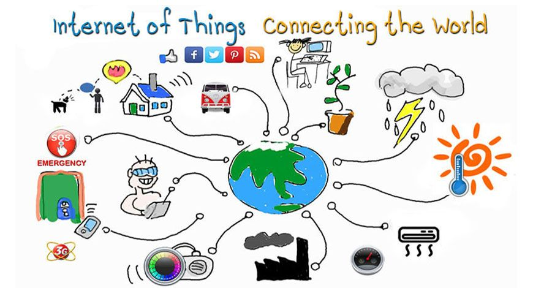
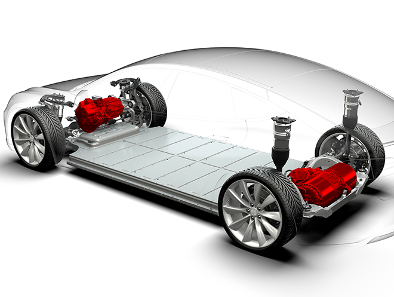

<!DOCTYPE html>
<html lang="en">

<head>
    <meta charset="UTF-8">
    <meta http-equiv="X-UA-Compatible" content="IE=edge">
    <meta name="viewport" content="width=device-width, initial-scale=1.0">
    <title>Simply Blogging</title>
    <script src="C:\Users\rudra\Desktop\TCSMEANStackTrainig\Phase1Project\JS\index.js">
    </script>
    <link href="https://cdn.jsdelivr.net/npm/bootstrap@5.0.0-beta2/dist/css/bootstrap.min.css" rel="stylesheet"
        integrity="sha384-BmbxuPwQa2lc/FVzBcNJ7UAyJxM6wuqIj61tLrc4wSX0szH/Ev+nYRRuWlolflfl" crossorigin="anonymous">
    <link rel="stylesheet" href="C:\Users\rudra\Desktop\TCSMEANStackTrainig\Phase1Project\CSS\clean.css">

</head>

<body>

    <div class="container">
        <nav class="navbar navbar-expand-lg navbar-light " id="mainNav">
            <a class="navbar-brand" href="index.html"></a>
            <button class="navbar-toggler navbar-toggler-right" type="button" data-bs-toggle="collapse"
                data-bs-target="#navbarResponsive" aria-controls="navbarResponsive" aria-expanded="false"
                aria-label="Toggle navigation">
                Menu
                <i class="fas fa-bars"></i>
            </button>
            <div class="collapse navbar-collapse" id="navbarResponsive">
                <ul class="navbar-nav ms-auto text-center">
                    <li class="nav-item">
                        <a class="nav-link" href="#a1">Add Blog</a>
                    </li>
                    <li class="nav-item">
                        <a class="nav-link" href="index.html">Home</a>
                    </li>
                    <li class="nav-item">
                        <a class="nav-link" href="">About</a>
                    </li>
                    <li class="nav-item">
                        <a class="nav-link" href="">Contact</a>
                    </li>
                </ul>
            </div>
        </nav>

    </div>

    <!-- Page Header -->
    <header class="masthead" style="background-image: url('header.jpg')">
        <div class="overlay"></div>
        <div class="container">
            <div class="row">
                <div class="col-lg-8 col-md-10 mx-auto">
                    <div class="site-heading">
                        <h1>Tech Blogs</h1>
                    </div>
                </div>
            </div>
        </div>
    </header>


    <a name="a1"></a>
    <div class="container">
        <form action="" method="get" class="form-group">
            <label>Title</label>
            <input type="text" name="Topic" id="title" class="form-control"><br />
            <label>Description</label>
            <textarea name="Description" id="desc" cols="50" rows="5" class="form-control"></textarea><br />
            <label>Image Files</label>
            <input type="file" id="image" class="form-control"><br />
            <input type="button" class="btn btn-primary" value="Add" onclick="storeintoSession()" />
        </form>
    </div>
    <hr />
    <div class="container">
        <div class="row" id="rows" class="container">
            <div class="col">
                
                <h2>Energy Efficient IoT Networks</h2>
                <p class="collapse" id="collapseExample" aria-expanded="false">
                    The Internet of Things (IoT), refers to devices
                    that are connected to the internet. These devices
                    have a wide variety of applications in fields like
                    smart cities, agriculture, health care, poultry,
                    manufacturing, etc. In the early stages of IoT
                    around 0.3 billion devices are connected to the
                    internet, that is estimated to reach 75 billion
                    by 2025. IoT devices communicate in between
                    them by transferring data without any humanhuman or human-computer interaction. In most
                    recent years a lot of research is going on IoT
                    to develop an efficient network. Every device
                    is connected to the internet and keep on using
                    energy, which leads to a short lifetime. In
                    order to prolong the lifetime of the network,
                    new topology has been proposed to develop an
                    efficient network. These networks form groups
                    known as a cluster, where a device among those
                    clusters will only have a connection to the base
                    station is called a clusterhead. The base station is connected to these devices, where each
                    of them gathers data from the other devices
                    which are not connected to the base station are
                    called as a clustermember.
                    A lot of research has been done to solve clustering problem, in this paper we are considering
                    k-hop clustering principle, where the distance
                    between the cluster heads should be greater
                    than k. Every device can be a cluster head, but
                    some of them are not stable enough to connect
                    the base station and this also leads to traffic at
                    the base station. In this work, we try to reduce
                    the number of cluster heads in IoT networks,
                    and also to maintain an efficient network with
                    extended lifetime </p>
                <a role="button" class="collapsed" data-toggle="collapse" href="#collapseExample" aria-expanded="false"
                    aria-controls="collapseExample"></a>

            </div>
            <div class="col">
                
                <h2>Tesla Model S Technology</h2>
                <p class="collapse" id="collapseExample" aria-expanded="false">
                    Tesla Motors (NASDAQ: TSLA) is showing off the advanced technology that powers Model S, the world’s
                    first sedan built from the ground up as an electric vehicle, in its stores across North America. The
                    tour rolls out starting this Friday, November 25th. Event listings can be found at
                    www.teslamotors.com/events.

                    The displays highlight the innovative components that make up Model S’ drivetrain including the
                    motor, battery pack, front suspension assembly, and rear drive unit. The tour is part of Tesla’s
                    strategy to introduce the public to the advantages of electric vehicles. Visitors to Tesla’s North
                    America showrooms can see and touch the building blocks of Model S while learning about them through
                    interactive touchscreen experiences.

                    Equipped with Tesla’s advanced electric powertrain, Model S provides instant torque and smooth
                    acceleration from 0-60 in less than six seconds. The aluminum body is engineered for superior
                    handling, safety and efficiency. With the most energy dense battery pack in the industry, and
                    best-in-class aerodynamics, Model S has the longest range of any electric car in the world, up to
                    300 miles on a single charge.

                    The components on display demonstrate the superiority and efficiency of Tesla’s electric vehicle
                    architecture. Customers will be able to see how Model S’ flat, lithium-ion cell battery improves
                    rigidity and handling, how the rear drive unit is efficiently designed for maximum power, and how
                    the lack of an internal combustion engine makes Model S stronger and safer.

                    “Tesla stores are designed to let people explore and learn about Tesla’s technology for themselves,”
                    said VP of Sales and Ownership Experience George Blankenship. “You’ll never see a ‘Don’t Touch’ sign
                    in a Tesla store. We want everyone -- from kindergartners to grandparents -- to come in and see for
                    themselves why driving electric is the future.”

                    The Model S components are just one pillar of Tesla’s mission to reinvent the way people buy cars.
                    Breaking from the traditional dealership model, Tesla stores entice, inform and engage prospective
                    customers with innovative touch-screen interfaces, knowledgeable product specialists, and a virtual
                    design studio where they can customize their own premium Model S sedans.
                </p>
                <a role="button" class="collapsed" data-toggle="collapse" href="#collapseExample" aria-expanded="false"
                    aria-controls="collapseExample"></a>

            </div>

            <div class="col">
                
                <h2>Cyber Physical Systems</h2>
                <p class="collapse" id="collapseExample" aria-expanded="false">
                    Cyber-Physical Systems (CPS) are integrations of computation, networking, and physical processes.
                    Embedded computers and networks monitor and control the physical processes, with feedback loops
                    where physical processes affect computations and vice versa. The economic and societal potential of
                    such systems is vastly greater than what has been realized, and major investments are being made
                    worldwide to develop the technology. The technology builds on the older (but still very young)
                    discipline of embedded systems, computers and software embedded in devices whose principle mission
                    is not computation, such as cars, toys, medical devices, and scientific instruments. CPS integrates
                    the dynamics of the physical processes with those of the software and networking, providing
                    abstractions and modeling, design, and analysis techniques for the integrated whole.

                    The Model S components are just one pillar of Tesla’s mission to reinvent the way people buy cars.
                    Breaking from the traditional dealership model, Tesla stores entice, inform and engage prospective
                    customers with innovative touch-screen interfaces, knowledgeable product specialists, and a virtual
                    design studio where they can customize their own premium Model S sedans.
                </p>
                <a role="button" class="collapsed" data-toggle="collapse" href="#collapseExample" aria-expanded="false"
                    aria-controls="collapseExample"></a>

            </div>


        </div>
    </div>
    <script>
        window.onload = reteriveFromSessionAndDisplay();
    </script>
    <script src="https://cdn.jsdelivr.net/npm/bootstrap@5.0.0-beta2/dist/js/bootstrap.bundle.min.js"
        integrity="sha384-b5kHyXgcpbZJO/tY9Ul7kGkf1S0CWuKcCD38l8YkeH8z8QjE0GmW1gYU5S9FOnJ0" crossorigin="anonymous">
        </script>

</body>

</html>